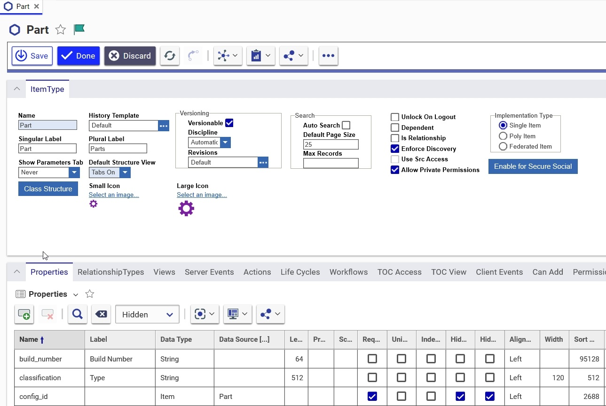

Configurable History Tracking
Aras Innovator provides the ability to track the history of an item and record the changes that have been made since its creation. Aras Innovator includes a set of Actions that can be used to determine which events are captured within the history logs. History can be tracked at both the Item and Property level. So, for example, if the name property of an item was modified by a user, the system can track not only that the item was modified, but that the name property was changed and what the old vs. new values were. Also, History tracking takes advantage of the built-in Aras Innovator multilingual capabilities such that history log labels and comments are recorded in multiple languages simultaneously (refer to the section on internationalization for more information on configuring Aras Innovator to handle multiple languages).
It is important to note that history is not enabled by default and must be configured for each ItemType that is to have history tracked. This prevents the database from being taxed by unnecessary data. Also, if an existing ItemType has history enabled after item instance data already exists in the database, history will be logged for each item instance only for future point events. Similarly, if an existing ItemType has history disabled after item instance data already exists in the database, then future changes will no longer track historical events. However, any history recorded for those item instances before it was disabled will remain in the database and viewable by users.
History Actions:
Only specific actions will trigger a history record to be written by the system. These actions are:
|
Action |
Description |
|
Add |
Logged when a new item is added to the database. No comment is stored. |
|
Update |
Logged when changes are saved for an item or when an item is manually versioned. No comment is stored. |
|
Promote |
Logged when an item is promoted to a new state. A comment is stored when included with the promote call, typically when get_comment is enabled on the Life Cycle Transition and the user enters comments when prompted. |
|
Reset Life Cycle State |
Logged when the "resetLifecycle" server action is called. This is normally done by an administrator using the Tools->Admin menu in the client. No comment is stored. |
|
SetDefaultLifecycle |
Logged when the " setDefaultLifecycle" server action is called. This is normally done by an administrator using the Tools->Admin menu in the client. A comment reflecting the new state of the item is stored. |
|
Delete |
Logged when an item is deleted from the database or a generation of an item is purged. No comment is stored. It is important to note that History for an item is not deleted from the database when the Item itself is deleted within Innovator. |
|
FormView |
Logged when an item form is opened. No comment is stored. |
|
FormPrint |
Logged when a printable view of a form is opened. No comment is stored. |
|
File Download |
Logged when users download one or more files. |
History Templates:
History Templates are used to define the set of actions that will trigger a history record to be stored by the system and the specific text that will be included in the entry. Aras Innovator provides a Default History Template (shown below) that can be used for configuring history for an ItemType (note: The Default History Template is read-only). Alternatively, custom Templates may be created by an Administrator.
Default History Template:
Steps to Create a Custom History Template (Administrators Only):
- Edit the History Template ItemType:
Name = Administrators
Category = Administration
- Save, Unlock & Close the History Template ItemType.
- Navigate to History Template under the Administration folder in the TOC. The History Template menu appears.
- Click Create New History Template. A blank History Template appears.
- Enter the template name in the Name field. This field is required.
- Select the Property_history checkbox to store histories for any ItemTypes referencing the template that have properties with history enabled. Deselect the checkbox if history should not be stored for any ItemTypes referencing this template that have properties with history enabled. In this case, the template setting overrides the property level history settings in the ItemType definition.
- Click on the History Template Action relationship tab in the lower portion of the form.
- The System populates the selected action records as new rows in the History Template Action relationship grid.
Configuring History for an ItemType (Administrators Only):

History Based On Life Cycle State
There may be cases when what an organization wants to track for history is dependent upon the Item’s Life Cycle state. For example, when a Document is in the ‘Preliminary’ or ‘Draft’ state, history changes are not as important as when a document is in a ‘Released’ state. Therefore, Aras Innovator provides the ability to override the History Template specified in the History Template for certain states in the ItemType’s Life Cycle.
- In the Life Cycle Editor form, select a state in the Map.
- Select a History Template by clicking the in the upper portion of the form (to the right of the History Template field). The system will launch a search dialog populated with available History Templates. Select the appropriate Template from the search dialog.

This History Template will now override the History Template specified in the ItemType definition for each item instance that is in this Life Cycle state.
View an Item’s History Log (All Users):
- Open the form for an Item Instance.
- In the Form’s Main Menu, click the Navigate button and select History from the dropdown menu:
The Item History Dialog appears.
The following properties are displayed in the Item History Dialog:
|
Property |
Description |
|
When |
The date and time when the action was performed |
|
Who |
The first name, last name of the user |
|
Action |
Indicates the action that was performed on the item. See ‘History Actions’ (above) for the list of potential actions |
|
Comment |
A system generated comment based on what is defined in the ‘History Template Action’. For example, if a property is changed, the comment may include the property’s old value and the new value. OR A Comment entered by the user when the item is promoted (life cycle) |
|
Item State |
The current state of the Item. |
|
Rev |
The Major Revision of the item after the action was performed. |
|
Gen |
The Generation of the item after the action was performed. |
| Created_on_tick | The created_on_tick property for the item. |
- In the ItemType definition form, select a History Template by clicking the ellipses in the upper portion of the form (to the right of the History Template field). The system launches a search dialog populated with available History Templates. Select the appropriate Template from the search dialog.
- If the selected History Template has ‘Store Property History’ set to true (checked), then any properties with the Track History attribute enabled will be tracked as part of the history log. To enable history for a property, set the value of the Track History Attribute flag to true (checked).
- Navigate to ItemTypes under the Administration folder in the TOC.
- Click the Select Items button on the relationship toolbar (note that Select Items is the only action available). The History Action search dialog appears.
- Select one or more actions from the search dialog and click the
 green arrow.
green arrow.